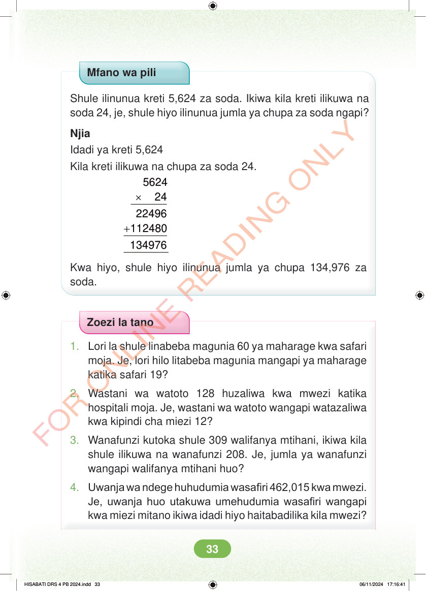

Mfano wa pili Shule ilinunua kreti 5,624 za soda. Ikiwa kila kreti ilikuwa na soda 24, je, shule hiyo ilinunua jumla ya chupa za soda ngapi? Njia Idadi ya kreti 5,624 Kila kreti ilikuwa na chupa za soda 24. × 5624 24 + 22496 112480 Kwa hiyo, shule hiyo ilinunua jumla ya chupa 134,976 za soda. Zoezi la tano 1. Lori la shule linabeba magunia 60 ya maharage kwa safari moja. Je, lori hilo litabeba magunia mangapi ya maharage katika safari 19? 2. Wastani wa watoto 128 huzaliwa kwa mwezi katika hospitali moja. Je, wastani wa watoto wangapi watazaliwa kwa kipindi cha miezi 12? 3. Wanafunzi kutoka shule 309 walifanya mtihani, ikiwa kila shule ilikuwa na wanafunzi 208. Je, jumla ya wanafunzi wangapi walifanya mtihani huo? 4. Uwanja wa ndege huhudumia wasafiri 462,015 kwa mwezi. Je, uwanja huo utakuwa umehudumia wasafiri wangapi kwa miezi mitano ikiwa idadi hiyo haitabadilika kila mwezi? HISABATI DRS 4 PB 2024.indd 33 HISABATI DRS 4 PB 2024.indd 33 06/11/2024 17:16:41 06/11/2024 17:16:41